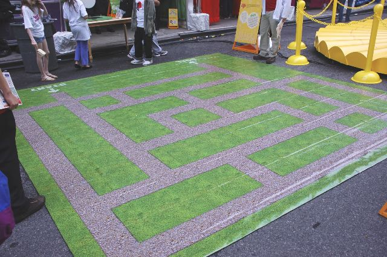
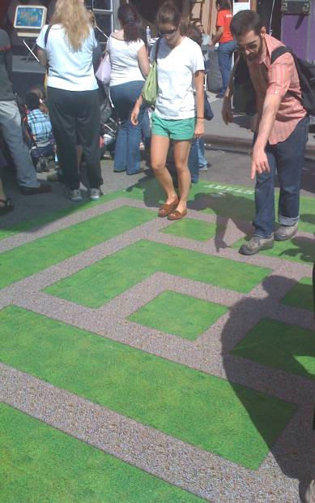
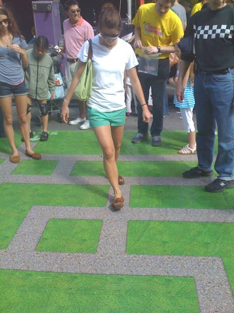
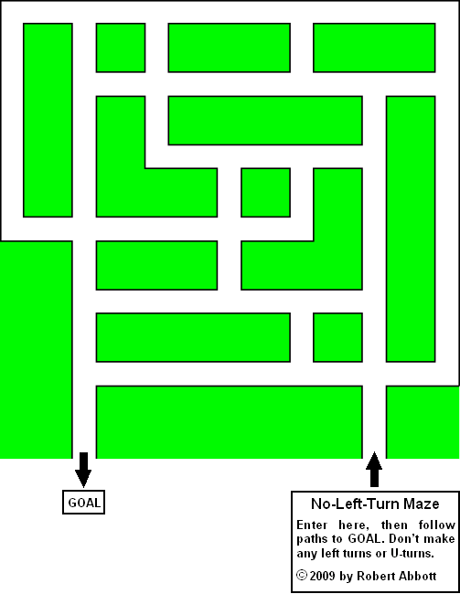

Easy Maze 1:This is one of my No-Left-Turn mazes, which are usually found outside of large cornfield mazes, and which are usually made out of hay bales. The pictures here show a different implementation: a floor mat maze. It appeared for just one day, Sunday, June 14, 2009, and it was part of the World Science Festival Street Fair. That fair took place in the streets around Washington Square Park in New York. Here is a picture that Daniel Scher took of the maze. This was early in the day, before it got crowded. 
|
|
  And here is the diagram of the maze, so you can try solving it. It should qualify as easy. At least it is easier to solve with the diagram than when you’re walking through it. A no-left-turn maze has a certain intuitive quality that makes it easy to follow. That’s because when we drive, we often plan a route that avoids left turns. Of course, if you’re in a country where they drive on the left, then a no-RIGHT-turn maze would be more intuitive. You can click here for the no-right-turn version of this maze. 
Back to the home page. |